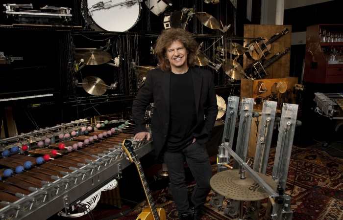
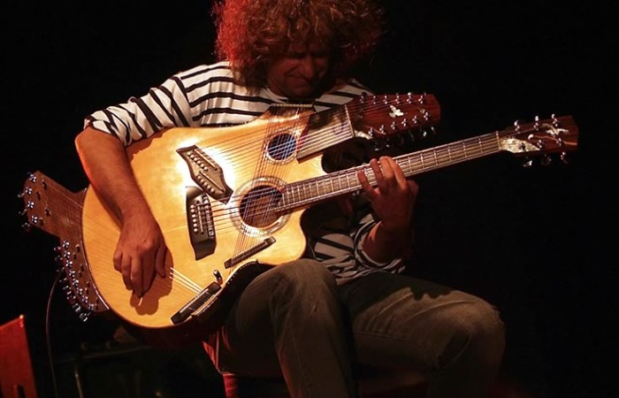

Pat Metheny
Guitarist - Songwriter - Teacher

London
Hammersmith Eventim Apollo, 2014

Brooklyn, NY USA
Orchestrion Project

Pikasso - 42 String Guitar
Created for Pat Metheny by luthier Linda Manzer
Previous
Next
The Man - The Musician
- Pat Metheny is an American Jazz guitarist and composer from Lee Summit, Missouri.
He is one of the most prolific musicians in the world.
- His music incorporates elements of progressive and contemporary jazz, Latin jazz, and jazz fusion.
His sound is powerful and comes from a place of creative genius. It's a musical journey that's
unique, soulful, and full of exploration and beauty.
- His entire family is musical. His father, brother and grandfather all played the Trumpet and his mother sang.
Pats brother taught him to play the trumpet at age 8 and the whole family played together at home.
There were no guitar players however. When he saw the Beatles perform on TV he wanted a guitar and at age 12
his parents alowed him to buy one. He chose a Gibson ES-140.
And so began the story of his Guitar career.
- By the age of 15, he was working regularly with the best jazz musicians in Kansas City.
- In his late teens he was the youngest teacher ever at both the University of Miami and
at the Berklee College of Music. He received an honorary doctorate many years later from Berklee.
- Metheny made his debut onto the international jazz scene in 1974.
- Since releasing his first album in 1976, Metheny has
released albums with the "Pat Metheny Group" (of which he is the leader), solo albums, scores for Hollywood
motion pictures, and collaborated with musicians from around the world.
- Having won twenty Grammy Awards, he's the only artist to ever win them in ten different categories.
In 2015, he was inducted into the Downbeat Hall of Fame, becoming only the fourth guitarist
to be recognized. He has three gold albums, and was a 2018 NEA Jazz Master Recipient.
- Metheny pioneered use of the 42-string Pikasso guitar, built by Toronto luthier Linda Manzer.
- He has taught music workshops all over the world.
- If you've never listened to his music, you're missing out on something truly wonderful.
- Read more about Pat Metheny ♫
- Pat Metheny's Website